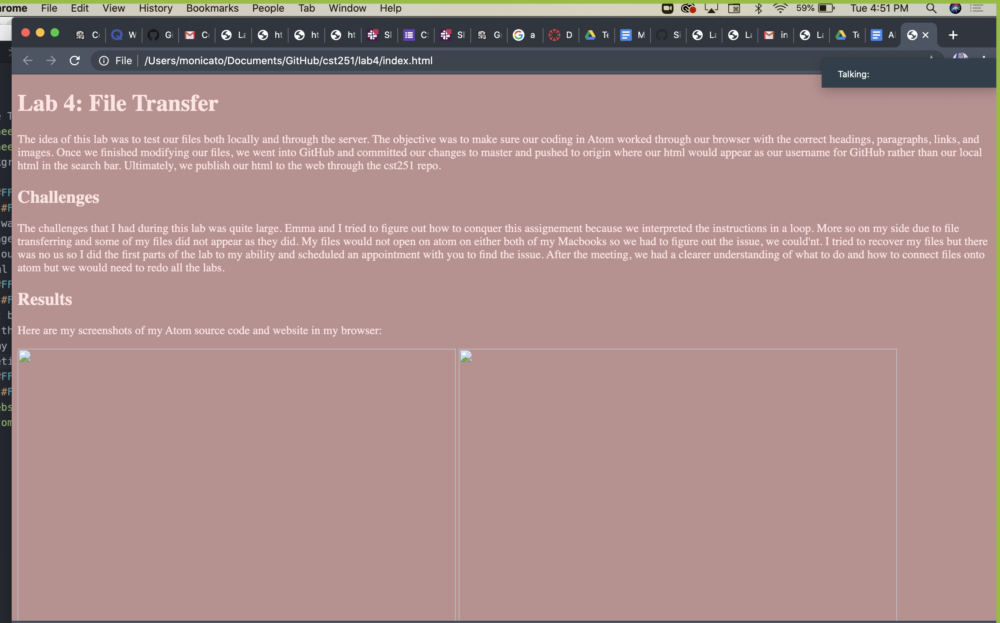
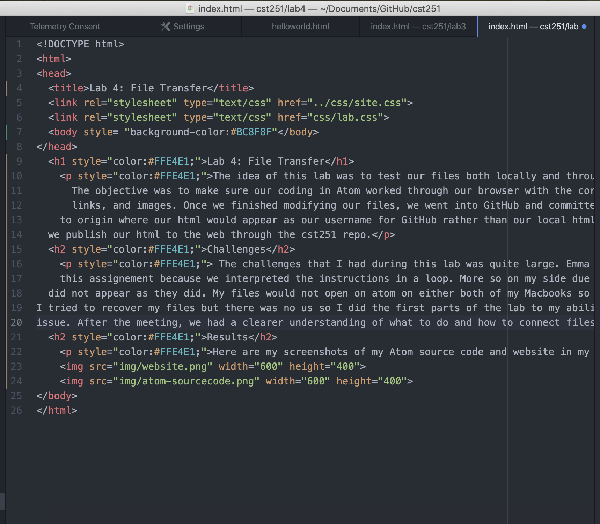

The idea of this lab was to test our files both locally and through the server. The objective was to make sure our coding in Atom worked through our browser with the correct headings, paragraphs, links, and images. Once we finished modifying our files, we went into GitHub and committed our changes to master and pushed to origin where our html would appear as our username for GitHub rather than our local html in the search bar. Ultimately, we publish our html to the web through the cst251 repo.
The challenges that I had during this lab was quite large. Emma and I tried to figure out how to conquer this assignement because we interpreted the instructions in a loop. More so on my side due to file transferring and some of my files did not appear as they did. My files would not open on atom on either both of my Macbooks so we had to figure out the issue, we could'nt. I tried to recover my files but there was no us so I did the first parts of the lab to my ability and scheduled an appointment with you to find the issue. After the meeting, we had a clearer understanding of what to do and how to connect files onto atom but we would need to redo all the labs.
Here are my screenshots of my Atom source code and website in my browser:
 